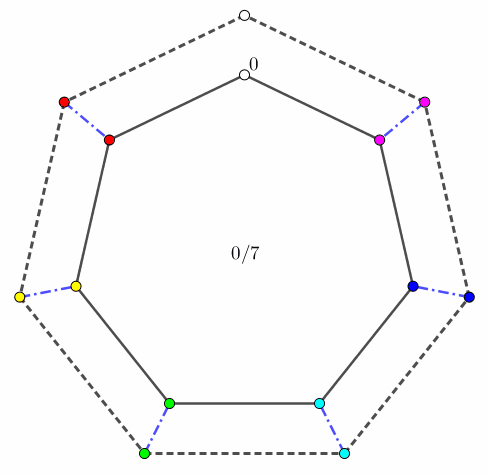
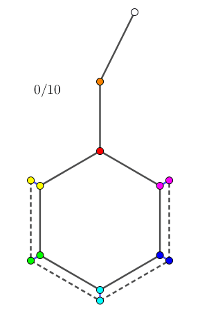
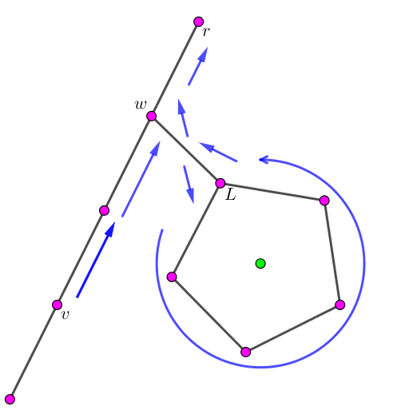
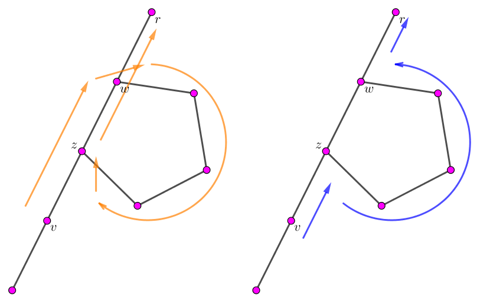

有一棵 $n$ 个节点的树，除了某个特定的点 $v$ 外，其余每个节点上有一个颜色互不相同的雕像。
现在，你需要将这些雕像重复排列，你可以重复以下过程：
选择一个与 "当前未摆放雕像的点 $v$" 相邻的点 $u$。
将 $u$ 处的雕像放到 $v$ 处 (这之后 $u$ 处就没有雕像了)。
通常，仅通过上述过程无法将雕像排列成所期望的顺序，因此允许你选择两个不相连的点，并用一条边将其连接。同时，你还要最小化移动的次数。
第一行包含一个正整数 $n$ ($2 \leq n \leq 2 \times 10^5$)，表示树的点数。
第二行包含 $n$ 个非负整数 $a_i$ ($0 \leq a_i \leq n - 1$)，表示点 $i$ 上的雕像的颜色。若 $a_i = 0$，表示此时点 $i$ 没有雕像。保证 $a_1, a_2, \cdots, a_n$ 是 $0, 1, \cdots, n - 1$ 的一个排列。
第三行包含 $n$ 个非负整数 $b_i$ ($0 \leq b_i \leq n - 1$)，表示期望的点 $i$ 上的雕像颜色，和 $a_i$ 用同样的方式给出。
接下来 $n - 1$ 行，每行两个正整数 $u_i, v_i$ ($1 \leq u_i, v_i \leq n$)，描述树上的一条边。
输出一行，包含 $1 \sim 3$ 个整数：
如果不需要额外连边就能达到目标，输出 0 t，其中 $t$ 表示最少的移动次数。
如果额外连接一条边后就能达到目标，输出 u v t，其中 $u, v$ ($1 \leq u < v \leq n$) 表示所连边的两个端点，$t$ 表示连边后最少的移动次数。可以证明，在题目的条件下，满足要求的 $u, v$ 是唯一的。
如果连接任何一条边后都无法达到目标，输出一个整数 $-1$。
我们将问题考虑为移动 "$0$ 点" (无雕像的点)，因此，向同一条边移动两次等价于什么都没干。
当原图是树时，由树的性质 —— 任意两条边之间路径唯一，因此将 "$0$ 点" 移动到目标位置后剩下的点的雕像排布方案是确定的。
因此只需模拟一遍并与 $b_i$ 比对一下即可得知不连边能否完成。
现在考虑加一条边的情况，即我们得到了一棵基环树。
我们考虑将 "$0$ 点" 移到环上，从而考虑环中的操作。
容易发现，对于一棵确定的基环树，当 "$0$ 点" 回到环上时，环外的点是不会发生改变的。
因此，如果对于两棵 "$0$ 点" 相同的树，如果能通过加一条边互相转化，那么将它们的共同 "$0$ 点" 移到同一个位置，剩下的点形成的置换是一个轮换 (ps: 循环 (Cycle) 的幂次称为轮换 (Rotation)，比如 $\begin{pmatrix} 1 & 2 & 3 & 4 & 5 & 6 \\ 3 & 4 & 5 & 6 & 1 & 2 \end{pmatrix}$)。
那么如果我们不将这个共同的 "$0$ 点" 移到同一个位置，那么根据这个环中是否包含 "$0$ 点" 分为两种情况：
环包含 "$0$ 点"。此时，变换形如下图：
由于所有雕像的颜色互不相同，因此一个 "非 $0$ 点" 上的雕像颜色改变当且仅当这个点在环上。因此我们只需要将所有颜色改变的点和 $0$ 点并在一起看是否成环即可。
环不包含 "$0$ 点"。此时，变换形如下图：
同样分析可以得到，在环上，除了与 "$0$ 点" 最近的一个点外，其余所有的点上的雕像颜色都会改变。因此我们只需要检验所有颜色改变的点和 "深度最小的点" 的父节点并在一起，看看是否成环即可。
(ps: 这里用了 "深度最小的点" 的说法，我们是默认这个共同 "$0$ 点" 是根节点，以后都将默认这个事实，这会对我们问题的分析带来方便)
于是我们现在已经完成了是否有解判定，并在有解的情况下找到了所要的边。下面的问题就是求最小值啦。
对于不加边的情况，最小值显然是两个 "$0$ 点" 之间的距离，没的话说的。
因此下面就考虑加边的情况。
由于两个 "$0$ 点" 的初始位置可能不相同，因此为了方便，我们固定其中一个 (比如 $b_i$ 中的) "$0$ 点" 为根节点 $r$，并记剩下一个 (比如 $a_i$ 中的) "$0$ 点" 为 $v$ 点。并分另外两种情况讨论：
路径 $v \leadsto r$ 和环不相交 (没有公共边)。
此时的最短路稍微简单些，考虑环中深度最浅的点 $L$ 与 $v$ 的 LCA $w$，然后先将 "$0$ 点" 从 $v \leadsto w \leadsto L$，然后进去绕几圈 (顺时针/逆时针，取较短的那个方向)，然后再 $L \leadsto w \leadsto r$。如下图所示：
路径 $v \leadsto r$ 和环相交 (有公共边)。
此时的最短路会稍稍有些复杂。我们假设路径和环的交集为 $z \leadsto w$ ($dep_z > dep_w$)，则将 $v \leadsto w$ 后，考虑以下两种转向：
而两种转向的圈数通常不相等，需要分别计算，不过它们的和应当等于圈长。整个过程如下图所示：
以上就是求最小值的全部情况，时间复杂度 $O \left( n \right)$。由于只需要求常数次 LCA，因此求 LCA 部分可以通过暴力实现。
#include <bits/stdc++.h>
typedef long long ll;
const int N = 200054, M = N * 2;
int n, E = 0, root;
int to[M], first[N], next[M];
int a[N], b[N], Lu, Lv, Lt;
int p[N], dep[N];
int diff = 0, buc[N];
int len = 0, cyc[N], in_cyc[N];
int A[N], B[N];
inline ll DD(ll &x, const ll y) {return x > y ? x = y : 0;}
inline int dmax(const int x, const int y) {return dep[x] < dep[y] ? y : x;}
inline void addedge(int u, int v) {
to[++E] = v, next[E] = first[u], first[u] = E;
to[++E] = u, next[E] = first[v], first[v] = E;
}
void dfs(int x) {
int i, y;
for (i = first[x]; i; i = next[i])
if ((y = to[i]) != p[x])
p[y] = x, dep[y] = dep[x] + 1, dfs(y);
}
int LCA(int x, int y) {for (; x != y; dep[x] < dep[y] ? y = p[y] : (x = p[x])); return x;}
inline bool find_endpoint() {
int i;
for (i = 1; i < diff && p[buc[i]] == buc[i - 1]; ++i);
if (i == diff) return Lt = Lu = p[*buc], Lv = buc[diff - 1], true;
Lu = Lv = Lt = p[*buc];
for (i = 0; i < diff; ++i) {
if (p[buc[i]] == Lu) Lu = buc[i];
else if (p[buc[i]] == Lv) Lv = buc[i];
else return false;
}
return true;
}
int main() {
int i, j, u, v, w, z, offset; ll D;
scanf("%d", &n);
for (i = 1; i <= n; ++i) scanf("%d", a + i);
for (i = 1; i <= n; ++i) scanf("%d", b + i);
for (i = 1; i < n; ++i) scanf("%d%d", &u, &v), addedge(u, v);
dfs( root = std::find(b + 1, b + (n + 1), 0) - b );
u = v = std::find(a + 1, a + (n + 1), 0) - a;
for (i = 0; u != root; ++i) std::swap(a[u], a[p[u]]), u = p[u];
if (!memcmp(a + 1, b + 1, n << 2)) return printf("0 %d\n", i), 0;
for (i = 1; i <= n; ++i) if (a[i] != b[i]) buc[diff++] = i;
std::sort(buc, buc + diff, [] (const int x, const int y) {return dep[x] < dep[y];});
if (!find_endpoint()) return puts("-1"), 0;
if (Lu > Lv) std::swap(Lu, Lv);
cyc[len++] = Lt;
for (i = Lu; i != Lt; i = p[i]) cyc[len++] = i;
std::reverse(cyc + 1, cyc + len);
for (i = Lv; i != Lt; i = p[i]) cyc[len++] = i;
for (i = 0; i < len; ++i) in_cyc[ cyc[i] ] = i;
assert(len > 2);
w = LCA(v, Lt);
if (w == Lt) z = dmax(LCA(v, Lu), LCA(v, Lv));
#define process() \
for (j = 0, i = Lt; i != root; i = p[i]) buc[j++] = i; \
for (; j--; std::swap(a[buc[j]], a[p[buc[j]]]), std::swap(b[buc[j]], b[p[buc[j]]])); \
for (i = 0; i < len; ++i) A[i] = a[cyc[i]], B[i] = b[cyc[i]]; \
assert(!(*A || *B)); \
offset = std::find(A + 1, A + len, B[1]) - A; \
if (offset >= len || memcmp(A + 1, B + (len - offset + 1), (offset - 1) << 2) \
|| memcmp(A + offset, B + 1, (len - offset) << 2)) return puts("-1"), 0;
if (w == Lt && w != z) {
if ((in_cyc[z] + 1) % len != in_cyc[p[z]])
for (std::reverse(cyc + 1, cyc + len), i = 0; i < len; ++i) in_cyc[ cyc[i] ] = i;
assert( (in_cyc[z] + 1) % len == in_cyc[p[z]] );
process();
D = dep[v] + std::min(len * (offset - 1ll), (ll)len * (len - offset) - 2 * (dep[z] - dep[w]));
} else {
process();
D = dep[v] + 2 * (dep[Lt] - dep[w]) + (ll)len * std::min(offset - 1, len - offset);
}
printf("%d %d %lld\n", Lu, Lv, D);
return 0;
}
坑1：(对于路径 $v \leadsto r$ 与环相交的情况) 因为在找环的时候环的存储方向是不定的，因此在最后计算的时候需要统一一个正方向 (比如 $v \leadsto w$ 向)。
坑2：注意输出时需要保证 $u < v$，不要忘记。